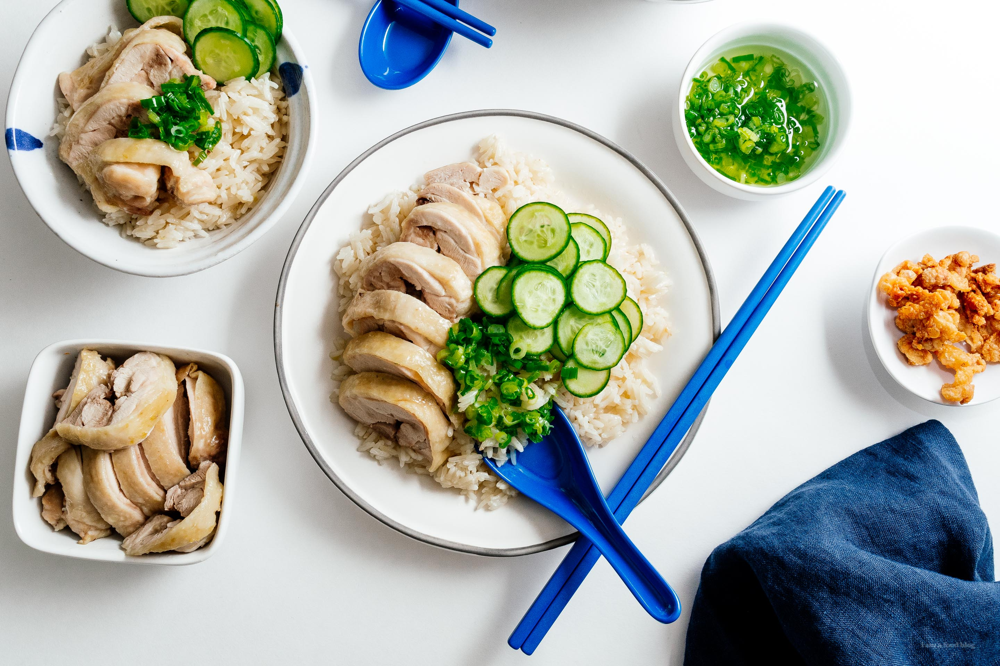

Chicken Rice

Description
Have you ever had Hainanese chicken rice before? Are you as obsessed with it as I am? I’m guessing the answer is
no because I have a lifelong,
deep obsession with chicken rice. It’s my ultimate comfort food, my all-time-favorite go to meal, my version of
Anton Ego’s mom’s ratatouille.
You know, the scene in in the Pixar movie where Anton is taken back to his mom’s kitchen and she serves him
ratatouille and all is right with the
world. That’s Hainanese chicken rice for me.
Ingredients
Chicken Rice
- 1/2 tsp kosher salt
- 4 boneless, skin-on chicken thighs
- 1 tbsp rendered chicken fat or neutral oil
- 1 tbsp minced ginger
- 1 clove garlic minced
- 1/2 small shallot finely diced
- 1 cup white jasmine rice
- 1 cup chicken stock low sodium
- 2 green onions whole
Green Onion Oil
- 1/2 cup thinly sliced green onions
- 1/4 cup neutral oil to taste
To Serve
- chili sauce
- sliced cucumbers
Steps
- Rub the chicken skin with the salt and set aside.
- In a pan or pot with a lid, heat up the chicken fat or oil. Add the ginger, garlic, and shallot.
- Cook, stirring, until fragrant. Stir in the rice and fry gently until glossy.
- Add chicken stock, then place the chicken, skin side up, in the pan. Add he green onions on top. Bring to boil over medium high heat and when it starts to simmer,
cover and turn the heat down to low. Cook for 17 minutes, turn off the heat, and let rest for 10 minutes.
- While the rice is cooking, make the green onion oil: place the green onions in a deep heat proof bowl and set aside.
- In a small pot, heat 1/4 cup oil over medium heat until it reaches 275°F. Remove the pot from the stove and very carefully pour over the green onions
– they will sizzle and bubble up. Stir in salt to taste.
- When the 10 minute rest is up, remove and discard the green onions. Remove the chicken and slice. Fluff up the rice and serve with thinly sliced cucumbers
and green onion oil. Enjoy immediately!